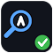
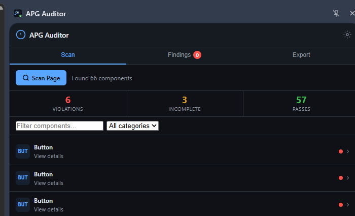
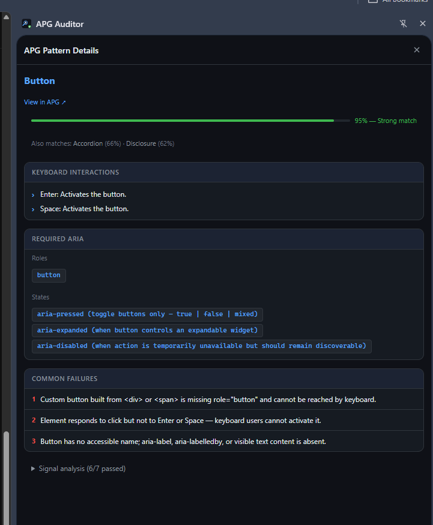
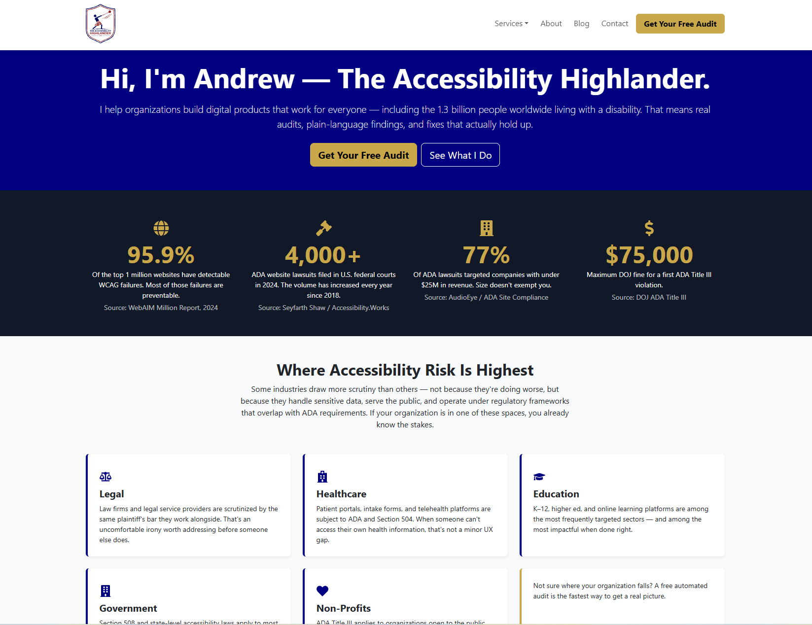
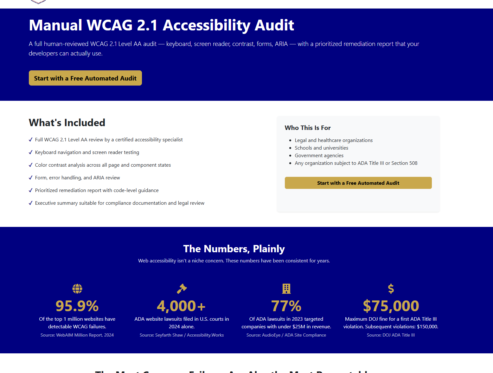
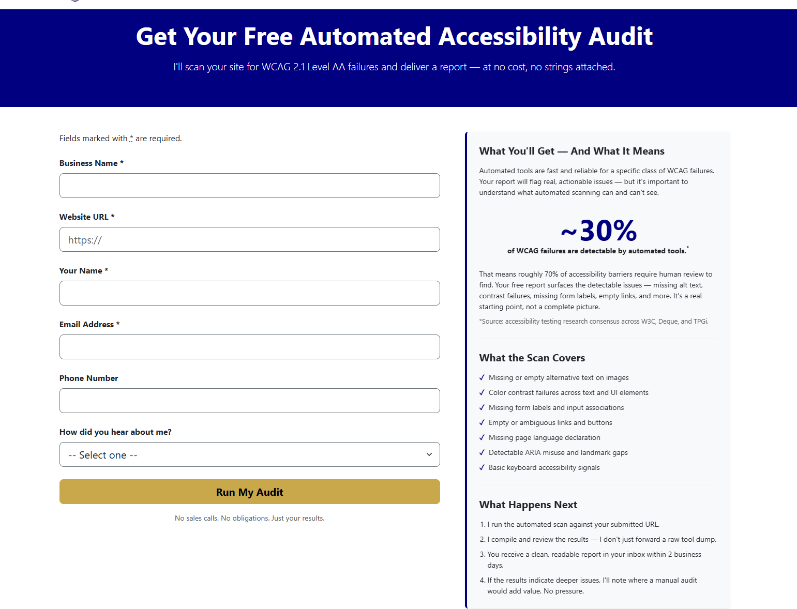
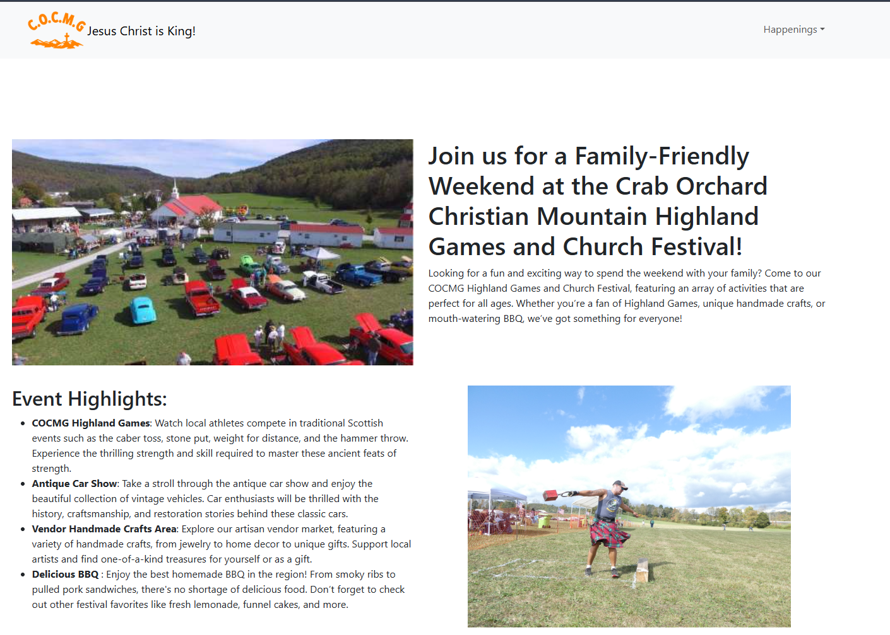
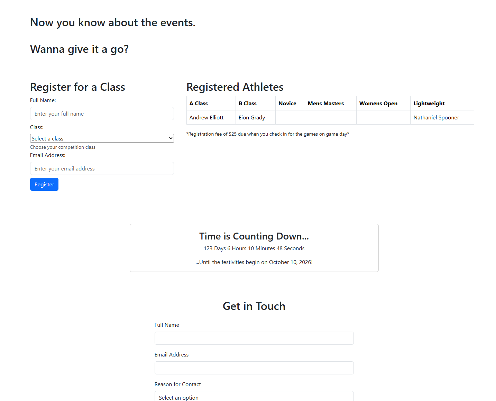
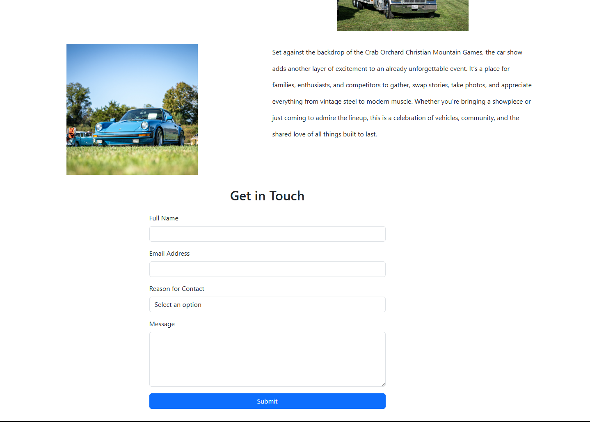

APG Auditor
Chrome extension that audits web components against the W3C ARIA Authoring Practices Guide patterns using the Claude API.
Full-StackDeveloper/Accessibility Specialist/Highlands Athlete
I'm a front-end developer who specializes in accessibility. For the last five years I've focused on making products work for everyone — people using screen readers, keyboard-only navigation, voice control, or just zoomed to 200%.
Most recently I've been doing this independently. Before that I led accessibility engineering at Dell Technologies and worked on remediation and frontend development at HCA Healthcare. I'm fluent in WCAG 2.1/2.2 AA and Section 508, comfortable across NVDA and JAWS, and ship mostly in React + TypeScript with Node on the back end. Day-to-day toolchain: axe-core, ANDI, Microsoft Accessibility Insights, and APG Auditor — a Chrome extension I built to test components against W3C ARIA APG patterns.
I work best on teams that ship — not ones that talk about shipping.
Chrome extension that audits web components against the W3C ARIA Authoring Practices Guide patterns using the Claude API.
Full-stack site for my independent accessibility consulting practice — React front end, Express + MongoDB API, automated audit pipeline behind the free-audit form, deployed on Heroku.
React site for an annual Highland Games festival in Crab Orchard, Tennessee. Built accessibility-first from the ground up.
A Chrome extension I built for developers and accessibility auditors who need to verify whether a component matches the W3C ARIA Authoring Practices Guide pattern for its role. Inspect any element on a page, pick the pattern you expect it to follow (combobox, listbox, tabs, dialog, etc.), and the extension uses the Claude API to evaluate the rendered DOM against the official spec — keyboard interactions, ARIA attributes, and focus management included.
I built this because automated tools like axe-core catch the obvious failures, but ARIA pattern conformance is a harder, more nuanced check that usually eats manual audit time. APG Auditor closes that gap.



The marketing and lead-gen site for The Accessibility Highlander, my independent accessibility consulting practice. Visitors can browse services, request a free automated audit, and book a consultation. Built as a full React single-page app with an Express + MongoDB API and SendGrid for transactional email, deployed on Heroku.
Behind the free-audit form is a background worker pipeline: a MongoDB Atlas trigger picks up new leads, BullMQ + Redis queues the work, a headless Chromium scan runs axe-core against the submitted URL, results land in a per-client Google Sheet, and the lead gets emailed their report automatically.
The site is held to its own standard — skip links, keyboard-tested nav, designed focus indicators, semantic landmarks, full WCAG 2.1 AA conformance. If I'm asking a prospect to pay me to fix theirs, mine has to be exemplary.



The official site for the Crab Orchard Christian Mountain Games — a Scottish Highland Games festival held annually in Crab Orchard, Tennessee. Built as a React single-page app covering event information, schedule, and visitor details.
Built accessibility-first from day one: semantic landmarks, keyboard-tested navigation, designed focus indicators, alt text on every image, full WCAG 2.1 AA conformance. Most festival sites are accessibility black holes; this one isn't.
Personal fit, too — I compete in the Highland Games, so building the digital home for an event in this community was a good intersection of two parts of my life.



Email: andrew@aedevdesigns.com